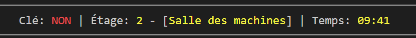
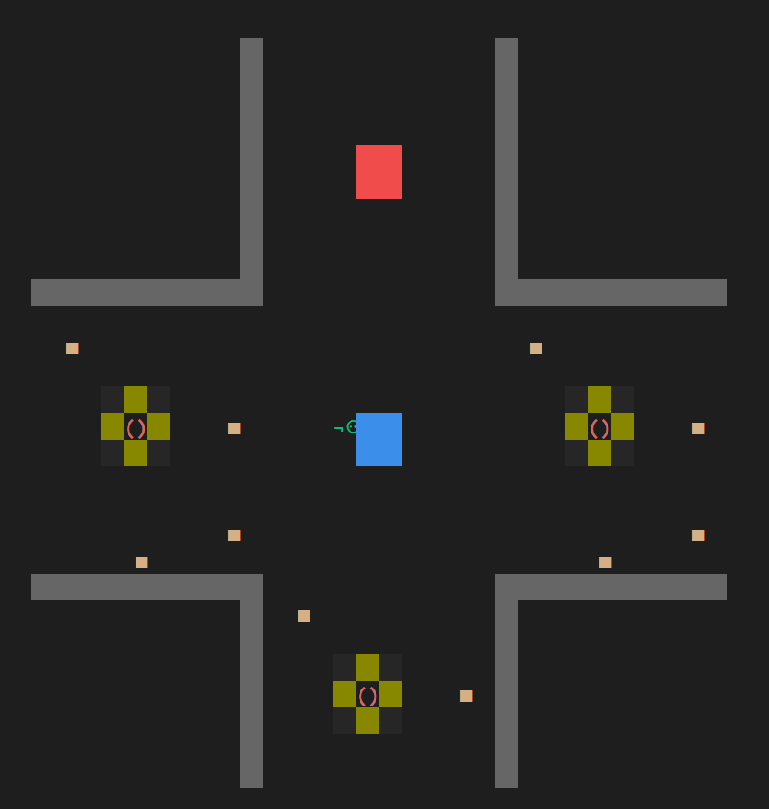
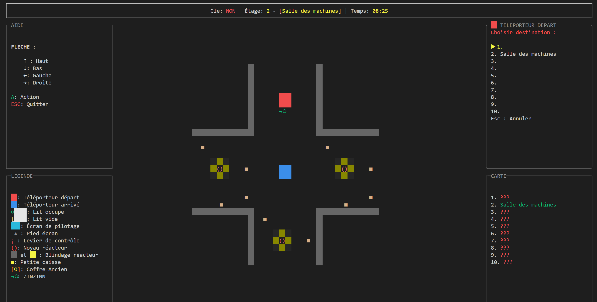
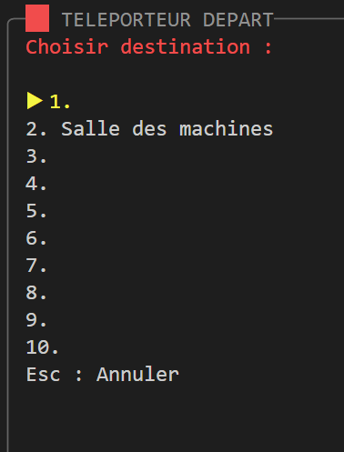
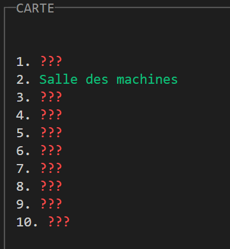
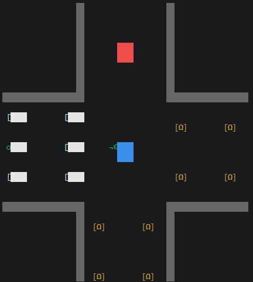
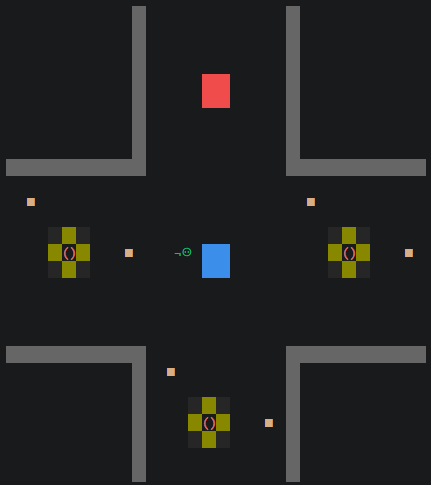
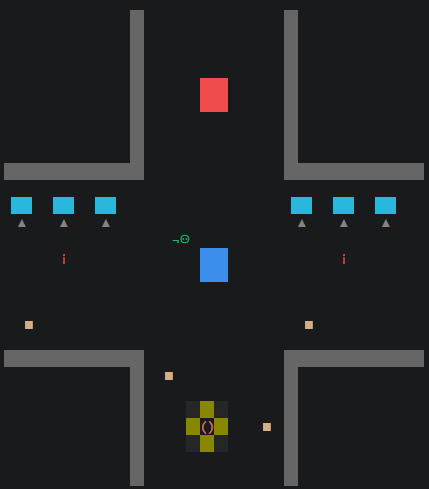

Garder l’essentiel visible
Clé, étage et chronomètre sont regroupés dans une barre d’état : un seul endroit pour suivre la mission.
Dix étages. Une clé. Dix minutes pour s’échapper.
Explorez un vaisseau dans le terminal, fouillez ses modules et retrouvez le bon poste de pilotage.

Mon travail · Développement C# et interface
Au sein du binôme, j’ai développé le changement d’étage, l’interface et la carte interactive, ainsi que l’actualisation des interactions à proximité des objets et le classement final.
La contrainte était de jouer dans la console. Avec Spectre.Console, j’ai cherché à organiser l’écran pour rendre l’exploration plus agréable et les informations plus faciles à suivre.

Faites d?filer les choix ou utilisez les fl?ches.

Clé, étage et chronomètre sont regroupés dans une barre d’état : un seul endroit pour suivre la mission.

Le panneau change selon l’objet à proximité. Ici, il permet de choisir la destination du téléporteur.

La carte révèle les étages visités pour garder une trace du parcours dans le vaisseau.
Notre ressenti · Bilan du binôme
Nous avons particulièrement aimé donner vie à notre idée, travailler le rendu visuel et appliquer la programmation objet à un jeu jouable.
Développer un jeu complet en C#, relier ses différentes fonctionnalités et organiser une interface dans le terminal avec Spectre.Console.
Du temps et davantage de connaissances en optimisation du code et en game design pour pousser le projet plus loin.
Essayer de développer le jeu sur Unity et ajouter des perturbations pendant la partie pour enrichir l’expérience.
À bord du vaisseau
Des lieux de vie, des salles des machines et des postes de pilotage : chaque étage réserve de nouvelles pistes.
Faites défiler les lieux ou utilisez les flèches.

Fouiller
Inspectez les couchettes et les coffres : la clé peut s’y cacher. Approchez-vous d’un objet et appuyez sur A.

Explorer
Des moteurs et des caisses à examiner. Empruntez les téléporteurs pour poursuivre la recherche à un autre étage.

S’échapper
La clé en poche, retrouvez le bon levier pour redémarrer le vaisseau avant la fin du chronomètre.
Prenez les commandes
Trois étages, trois minutes : une adaptation web courte pour découvrir le jeu.
Le jeu C# original propose dix étages générés et un classement local.
Classement enregistré dans ce navigateur, séparé du jeu C# original.
Aucun temps enregistré. Terminez la démo pour établir le premier record !
Code_C# et
lancez dotnet run.
Le projet comprend un mode normal, un mode test et un classement des dix meilleurs joueurs.
Projet réalisé par Jan de Greave et Zoé Schliefer Berlioux.